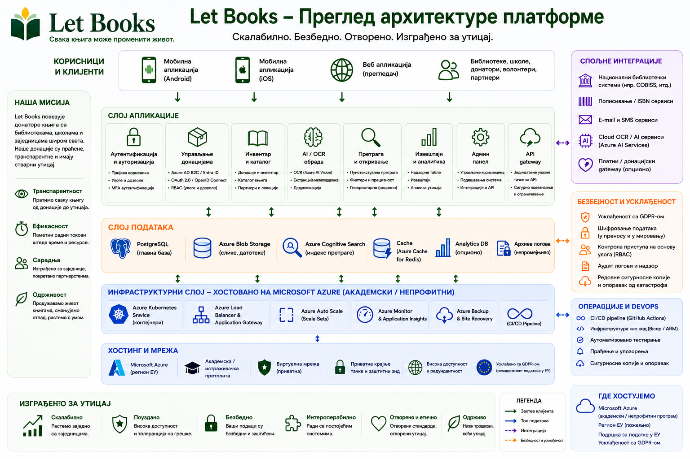

Примери хостинга и управљања описују смер архитектуре и правила, али не значе сертификоване имплементације или постојеће продукцијске одговорности.
Водич за администраторе
Ускладите приступ, приватност и логистику од самог почетка.
Let Books мора бити користан приватном донатору, удружењу или будућем институционалном домаћину. Администратори зато требају јасна правила о корисницима, tenantима, улогама, локацијама и необавезној употреби AI-ја.

Шта администратори управљају
- Одобреним приступом и чланствима
- Tenantима и улогама
- Структуром локација и токовима донација
- Границама приватности и ревизијом
- Необавезним AI, OCR и преводилачким подешавањима
Шта треба избегавати
- Приступ који се ослања само на спољну пријаву
- Јавно откривање тачних локација складиштења
- Обавезни плаћени AI у основним токовима рада
- Мешање физичког примерка са чистим метаподацима
Модел приступа
Аутентификација може долазити од спољних пружалаца идентитета, али ауторизација мора остати под управљањем апликације.
Одобрене пријаве
Ране или приватне имплементације треба да ограниче приступ на унапред одобрене кориснике.
Чланства у tenantима
Исти корисник може учествовати у више tenantа са различитим улогама.
Видљивост по улози
Рецензенти не смеју аутоматски видети приватне белешке и детаље дома донатора.
Приватност и управљање
Тачне локације, приватне белешке и контакт подаци треба да остану ограничени. Извоз, увоз, промене улога и будући AI захтеви морају бити евидентирани.
Смер имплементације
Платформа мора радити за једну приватну имплементацију, али остати отворена за касније институционално или самостално хостовање уз складиштење независно од добављача.
Пример: Удружење користи Let Books за више локалних донатора и партнерских библиотека. Један администратор одобрава приступ, сваки донатор има свој tenant, а OCR остаје искључен док не постоји буџет за њега.